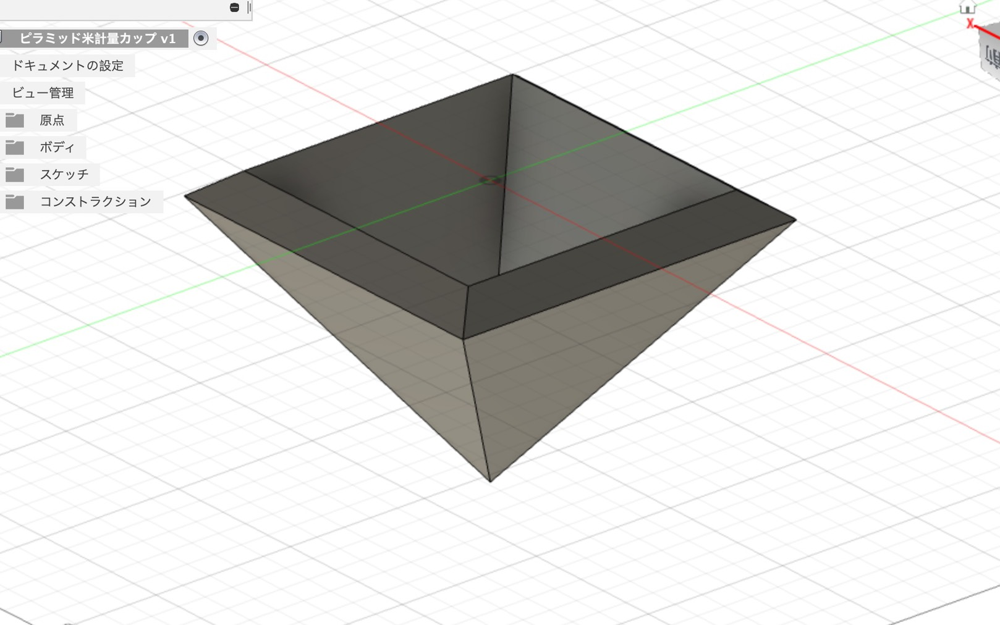

Schedule
ステップ１/すくうモノを作る(機能編)
すくう機能を果たすモノを作る
現在主軸に置く場面は、浴槽の髪の毛をすくう場面とお米をすくう場面
これいいなと思ったら他の動作のモノも取り組んでみる。
注意点
※小さく設計すること
※一発でプリント、出力できるものにすること
※サポートなし
※二つで一つのモノは考えない(例 組立式
※著作権には気を付ける
※作って終わりにしない。実際に使って次の授業時間までに発表できるように準備する(動画や写真)
※出力時間は短く。最低一日以内
※ゴミ（使えないモノ）は作らない
ステップ2/モノのデザインをより美しくする
モノを見たときに、いいなと思えるデザインに手直しする。
手直しした上で機能面、出力時間もチェックをする。
ステップ3/生活の場面のすべてに3プリンターで作ったモノがある未来の提案
モノを買ってくるのではなく、家でモノをプリントして使える未来を社会に問いかける
ピラミッド型米すくい
Fusion360 画像

出力後&完成画像

6/18 改善点
大き過ぎる為、出力に時間がかかり過ぎてしまうので、小さくする(約22時間かかりました)
一合の体積で設計する
いいなと思えるデザイン面が薄い
魚型髪の毛すくい1
Fusion360 レタリング画像
出力後&完成画像
6/18 改善点
すくえる部分が縦に長いので、浴槽の髪が取り切れない
デザインから入ってしまったので機能自体を見直す必要有